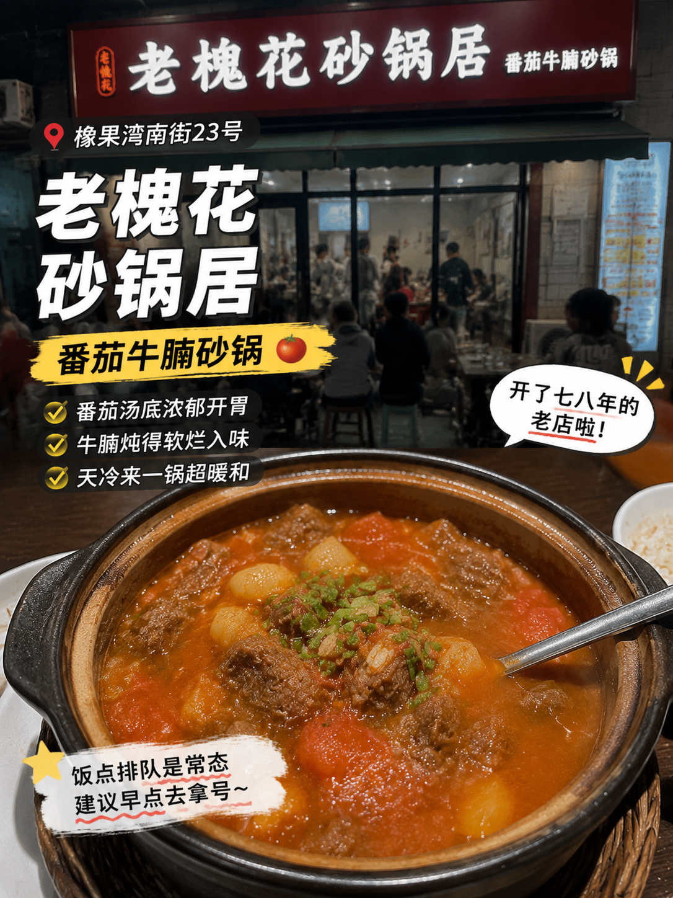
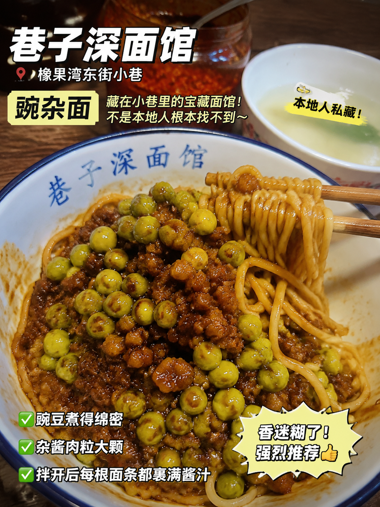
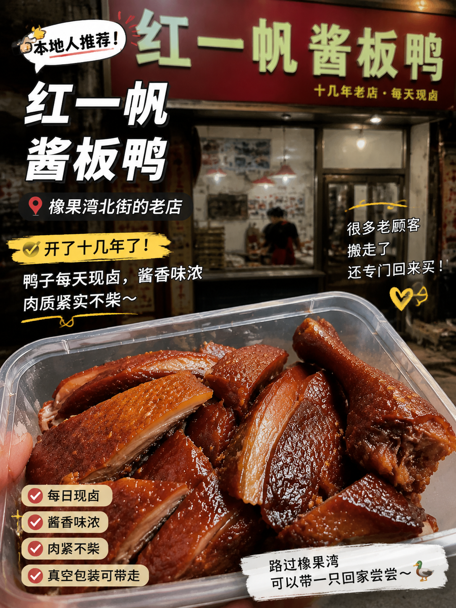
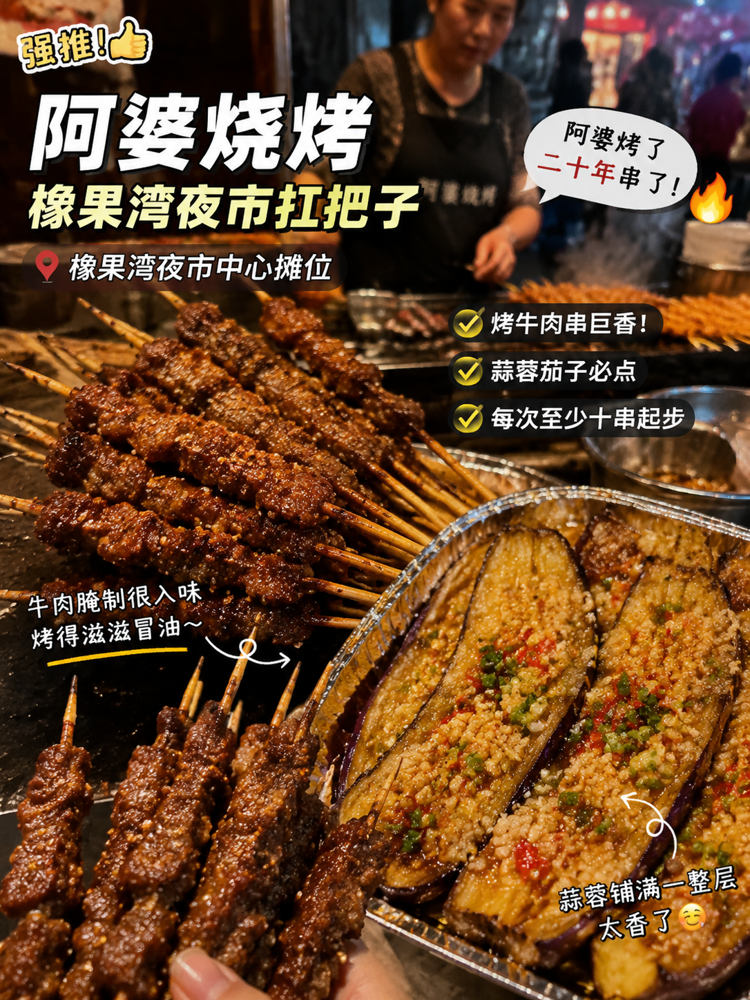
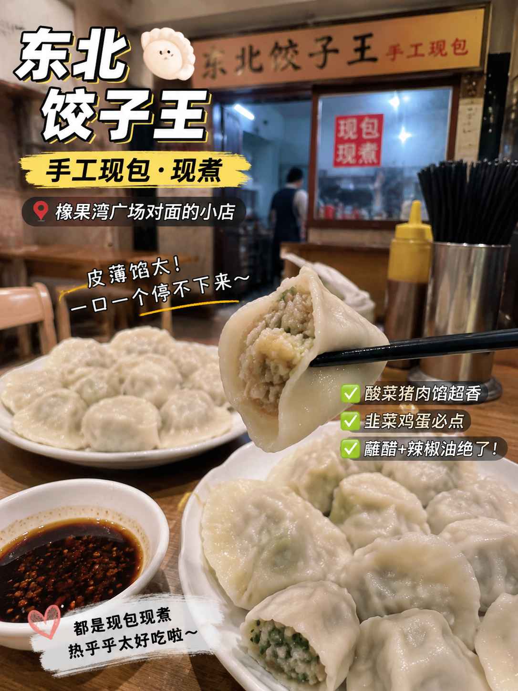
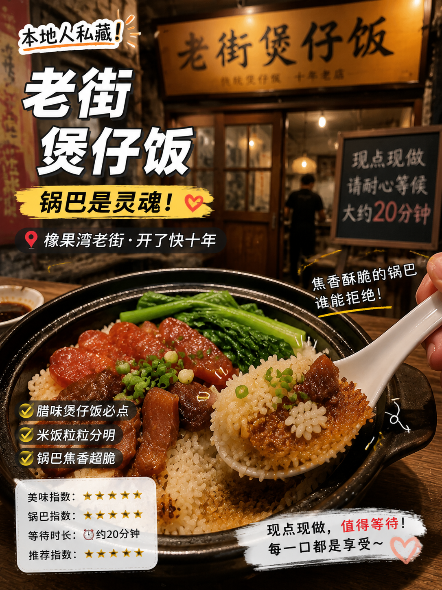

橡果湾商圈美食测评
@xiangguowan_food
📸 认真吃饭的槐花土著 · 橡果湾逛吃全攻略
168
探店
3826
粉丝
1.8w
获赞
笔记
收藏
探店合集

老槐花砂锅居 · 番茄牛腩砂锅
橡果湾南街23号，汤底浓郁牛腩炖得软烂🍲 天冷的时候来一锅整个人都暖了🔥🔥 每次去都要排队，但是值得！！

巷子深面馆 · 豌杂面
豌杂面豌豆煮得绵密杂酱肉粒大颗，每根面条都裹满酱汁🍜✨ 一口下去太满足了！！不是本地人根本找不到的宝藏小店🤫💕

红一帆酱板鸭
橡果湾北街的老店，开了十几年🦆 鸭子每天现卤，酱香味浓肉质紧实🤤 每次路过都要打包一只带回家😋🔥 老顾客搬走了还专门回来买！

阿婆烧烤 · 夜市扛把子
阿婆烤了二十年串了🔥 烤牛肉串和烤茄子是招牌！每次去至少十串起步😋🍢 夜市06号摊位，去晚了就卖完了！！

东北饺子王 · 手工现包
皮薄馅大蘸上醋和辣椒油🥟🔥 一口一个根本停不下来！！老板娘是东北人贼拉热情～每次去都像回了家一样🥹💕
茶语时光 · 网红打卡
招牌杨枝甘露料挺足🥭 环境不错适合拍照📸 店面装修很ins风～路过橡果湾可以来一杯✨

老街煲仔饭 · 锅巴是灵魂
腊味煲仔饭米饭粒粒分明🍚 底下的锅巴焦香酥脆，淋上酱油拌匀～每一口都是享受😭🔥 每次去都要等二十分钟现做，但值得！！
麻辣烫小店 · 槐花人的深夜食堂
橡果湾巷子里藏着的小店🌶️ 汤底浓郁麻辣鲜香🌶️🌶️ 丸子蔬菜应有尽有，自己选料自己搭配，每次都能吃出不同花样🔥 夜宵首选！！
◀ 关闭
17
/29